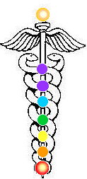

|  | This meditation was given to a couple of JoS clergy members from Thoth and Azazel. |
3. Now expand the stream of light into a staff. Visualize the pole spinning. Spin faster and faster. The staff should be glowing brilliantly. Now, command the pole to spin at the speed of light.
4. Now focus at the base chakra again, glowing in a ball of brilliant light. From this base, two serpents will emerge. They will move outwards, just like in the caduceus and then turn back inwards to connect with each other at the second (sexual) chakra, lighting it up.
5. They move back outwards again and then inwards to connect with the third (solar) chakra, lighting it up.
6. Moving back outwards, they then turn in at the heart chakra and do the same. Continue this all the way to the crown or 8th and 9th chakras.
7. Now go back and spin the staff at the speed of light.
8. Now return to the serpent if you wish to do another round and repeat.
© Copyright 2005, Joy of Satan Ministries;
Library of Congress Number: 12-16457

BACK TO MAIN POWER MEDITATION PAGE